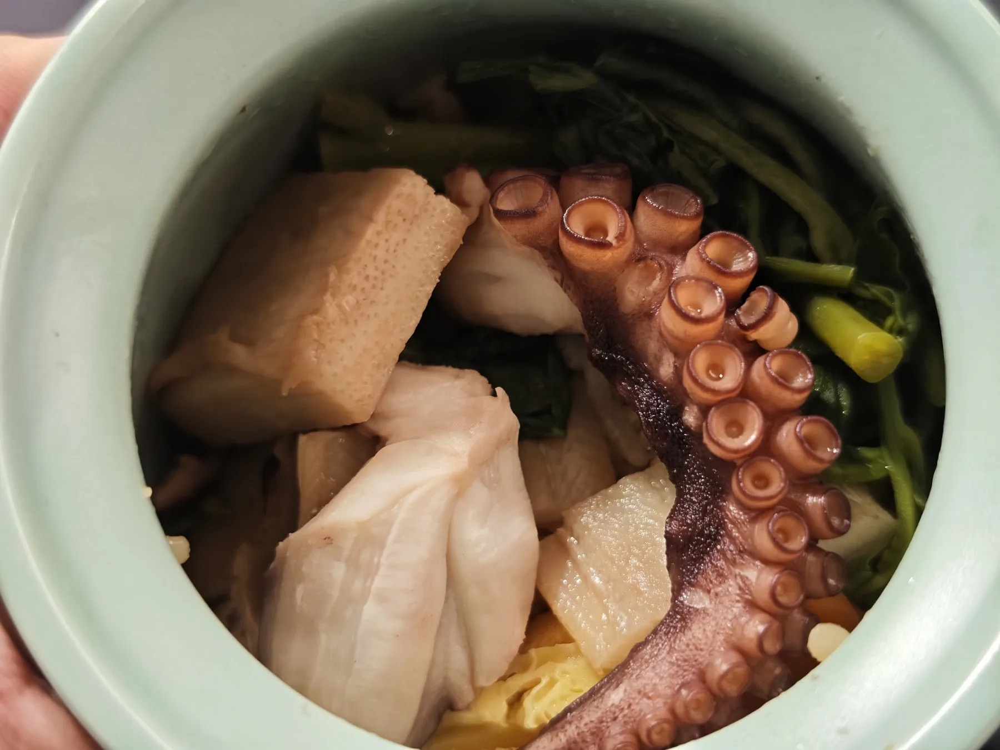
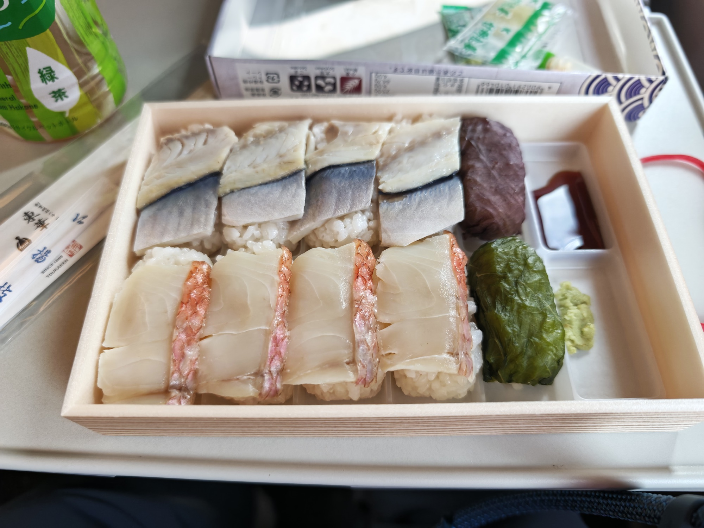
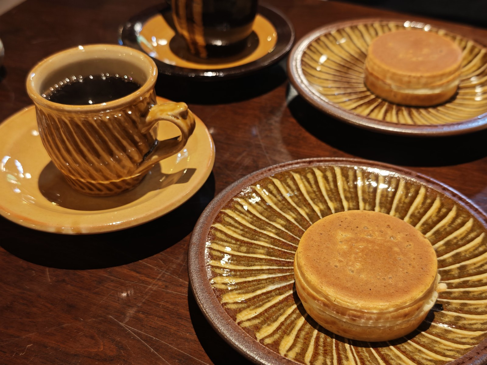
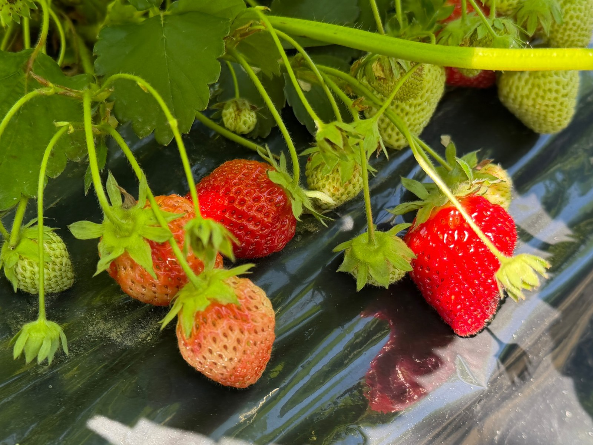

ドローン旅行ガイド
旅先でドローンを使う前に考える準備、空撮の判断、軽い機体で続ける撮影スタイル。
Himeji, Hong Kong, Travel and Cameras
姫路城と香港。長く自分を育ててくれた二つの場所への感謝を軸に、旅先で出会った光、カメラとドローンで見た景色を、写真と言葉で残しています。
Now in Himeji
姫路城を借景に、薪能、大名行列、千姫輿入れ行列、総踊りが行われる3日間。白鷺三十六景とあわせて、祭りのなかの姫路城の表情も追いかけます。
5月23日・24日は姫路城周辺で交通規制が予定されています。公共交通機関の利用がおすすめです。会場内でのドローン使用など危険な行為は禁止されています。

今日の断章
台北駅の弁当フェアに淡路屋が来ると聞けば、神戸の味を台湾で買うという妙な遠回りをせずにはいられず、約一時間並んで手に入れた「ひっぱりだこ」をホテルで開けると、壺の中の蛸の吸盤までがきちんと旅をしてきたようで、結局いちばん遠回りしていたのは私の食欲だった。
これまでの断章を見る →Fragments
写真を入口に、その日の出来事を一文で残します。




ドローン旅行、Leica M2の旅写真、香港と日本の二拠点生活を探して来た人への入口です。
最新の記事を読み込み中...